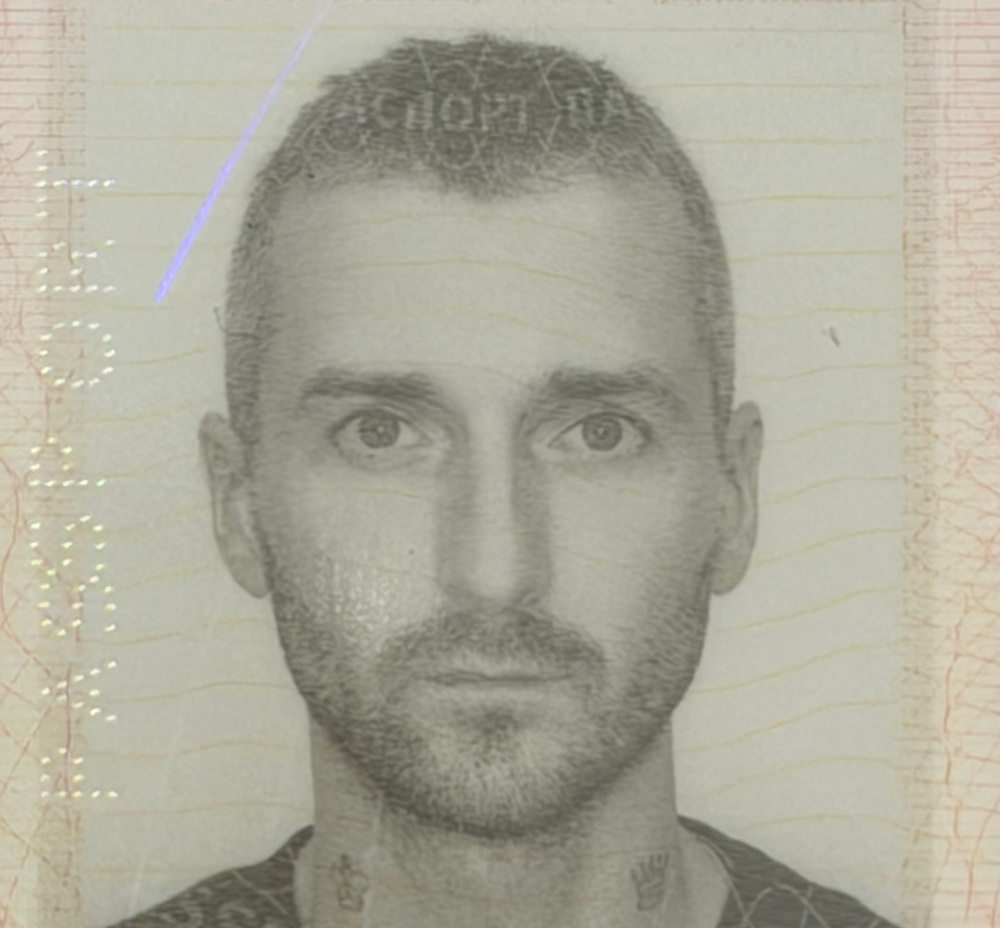
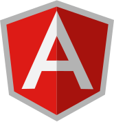
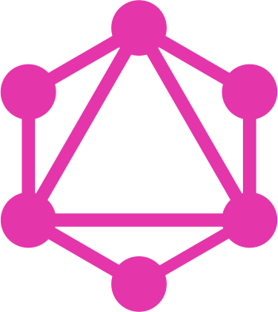

Alexei Selivanov

Senior full-stack engineer with a decade of experience and a background in mathematics
Build products end to end — database schema, backend services, complex web UIs, and native mobile apps.
My path runs from eight years at Upwork, through early-stage startups (Beeper in Silicon Valley, Tymely in Tel Aviv), to
architecting an ERP-scale B2B commerce platform from its first commit.
Experience
Senior Full-stack Engineer Full-time
Magad
Oct 2025–Present


B2B commerce and retail-operations platform for the wholesale electronics trade — an ERP-scale system covering
product catalog, purchasing, warehouse, sales, finance, and market intelligence.
A TypeScript/Bun monorepo (~320K lines, 14 workspaces): a Next.js web app with 210+ routes over a 230-table
PostgreSQL schema, two native iOS apps, and 8 independently deployed background workers.
Fully multilingual (5,000+ i18n keys).
#1 contributor (1,850+ commits, ~55% of the code) in a two-engineer team.
-
Co-built the warehouse management suite: scan-driven receiving, picking & packing, and pallet/box shipment
assembly with weight stations against capacity-constrained storage.
Direct Zebra label printing from the browser via a hand-written ZPL generator.
-
Owned the purchase-order lifecycle — approval workflows, audit log — and the document engine generating
commercial invoices and packing lists; co-built sales orders and finance.
-
Launched a B2B wholesale storefront — a customer-facing iOS app plus back office — with dated, quantity-tiered
price lists and offer/counter-offer price negotiation.
-
Created AI document & vision pipelines: PDF invoices parsed into structured order lines (OCR + Gemini with
attribute-constraint solving), warehouse photos resolved to SKUs via three barcode engines plus vision models,
and an agentic taxonomy builder crawling brand sites and web archives.
Vercel AI SDK orchestrating OpenAI and Gemini models; crawling via Playwright through Bright Data
proxies.
-
Built market-intelligence workers aggregating prices from Keepa/Amazon and ~80 Apple country storefronts.
Playwright scraping, automated brand & model matching, an LLM-tagged market-news feed.
-
Wrote a native Swift barcode scanner module (AVFoundation + Vision) for the warehouse iOS app.
OCR consensus voting, region-of-interest gating, adaptive frame throttling, low-light detection.
Senior Full-stack Engineer Part-time
Tymely.ai
Sep 2023–Sep 2025


AI-powered customer-support automation: an LLM engine resolving e-commerce support tickets end to end.
#1 contributor (~780 commits) to the React/TypeScript operations console — the human-in-the-loop workbench where
agents and analysts supervise the AI — with regular backend work in the Python policy engine.
-
Shipped the redesigned agent ticket-handling workspace and owned the "argument" review UX: approval flows,
source-text highlighting, bulk editing. Arguments are LLM-extracted variables that the AI's policy
decisions branch on.
-
Built the LLM experimentation suite letting analysts run prompt & argument experiments against production
tickets. Model & temperature selection, live report polling, virtualized result grids.
-
Built the real-time Live Resolutions dashboard full-stack — an animated feed of tickets the AI resolves
autonomously. React frontend; FastAPI/SQLAlchemy aggregation queries over JSONB.
-
Built a custom rich text editor on Lexical.
Supports a mix of partial HTML, Markdown & Jinja templates in a single document.
-
Developed the graph-based no-code policy editor on React Flow — inline validation on nodes, path highlighting,
embedded template editing. Virtualization and clustering made 1,000+ node graphs perform smoothly.
-
Created real-time collaboration primitives — ticket write/read locks, presence indicators, cross-session sync —
powered by AWS Amplify PubSub.
-
Owned the frontend platform: removed Nx and migrated the build from Webpack to Vite (435 files, net −55K lines),
then MUI v5→6, Amplify v5→6, and TanStack Query v4→5 with a full data-layer refactor.
All landed without feature freezes.
- Built the Playwright E2E pipeline from zero. Automated Cognito OTP login, screenshot diffs, Dockerized
runs, per-PR GitHub Actions.
-
Backend work in the AI policy engine: argument lifecycle, XSS-safe Jinja2 response templating, and ticketing
integrations (Zendesk, Salesforce, Five9). FastAPI, SQLAlchemy, PostgreSQL, AWS Lambda + CDK.
Senior Frontend Engineer Part-time
Beeper
Dec 2020–Feb 2022
Universal chat app unifying iMessage, WhatsApp, and a dozen other networks in a single client — a Silicon Valley
startup by Eric Migicovsky, creator of
Pebble smartwatches.
Joined at an early stage as one of 5 engineers and for over a year solely owned the Electron desktop app, working
closely with the designer.
The app was based on the open-source Element Matrix client,
which I tailored to our needs:
- Implemented user inactivity and unread message tracking. Consistent behavior for scroll to first unread
and sticky scroll to bottom.
- Reworked the sidebar. Clean look with pinnable favorites, similar to iMessage.
- Delivered a native look & feel across platforms. Including a native translucent background on macOS —
non-trivial at the time.
Senior Full-stack Engineer Full-time
Upwork
Oct 2016–Oct 2024


Eight years as a full-stack engineer at the world's largest freelance marketplace, growing from feature work to
leading migrations of core infrastructure.
- Shipped conversion-focused product features across the marketplace.
- Migrated legacy AngularJS pages to Vue & Nuxt. Vuex store architecture with request-deduplicating action decorators,
several page sections, responsive layout.
- Led a team of 5 through a six-month migration of the PHP & Symfony middle layer to GraphQL. Schema
design, resolver implementation, frontend rework, testing, gradual release.
Education
M.S. in Computer Science—Ural State University,
2009–2011
Graduate-level computer science on top of a mathematics foundation.
B.S. in Mathematics—Ural State University, 2005–2009
Studied pure mathematics, physics, and computer science.